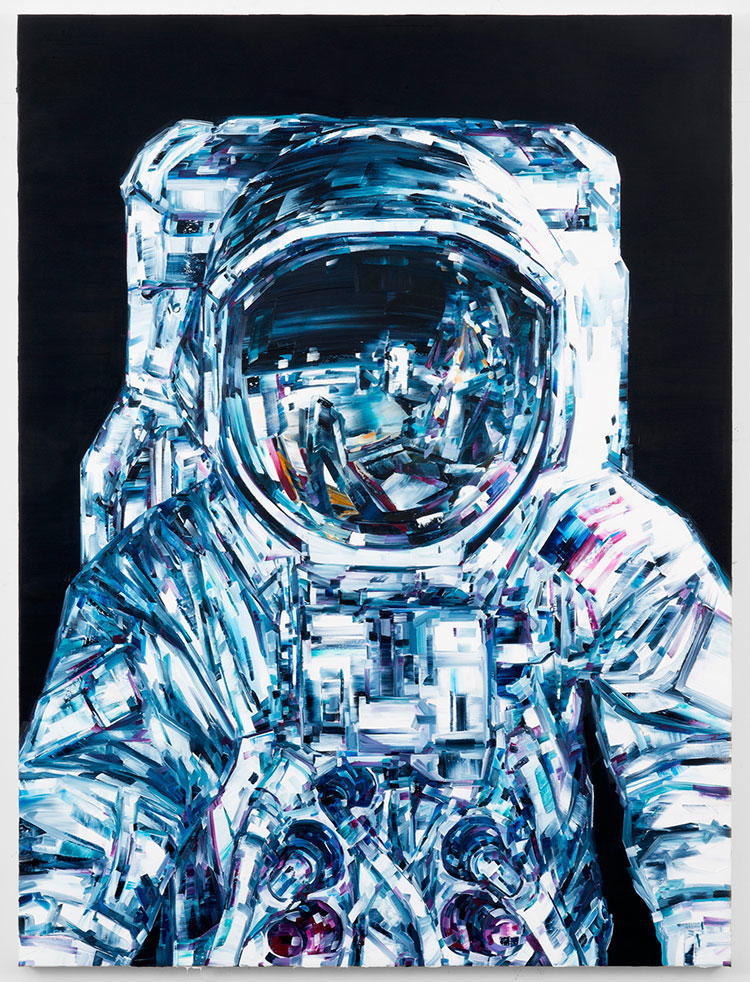

About Me: Alison P. Hunter

As much as a way of life, Alison P. Hunter is an article of faith.
I am random and mutable assemblage of traits, and yet I find mening in life. Nihlist Arby's Twitter feed
speaks to this friction well. Please enjoy Tweets form this collection here on my About Me page.
Experience
In honor of john lennon's return to the void, beat your wife...in a friendly race down to arbys.
Arbys: bigger than Jesus, realer than God. On this, a date that lives in infamy,
surprise your unsuspecting hunger with a tactical, 2 wave Arbys attack. Arbys arbys arbys
We made it out of cows. And when they die get ready. To cram them in your bowels. Have a Hanukkah. Enjoy arbys.
Relevant Experience
Web Developer, Relaxr 2015 — present
It's Black Friday. You've laughed at stampeding fat people. You've choked a bitch for an Xbox. Now, hit up Arbys and get ready to die.
Arbys
Web Developer, Startup Matchmaker 2015 — present
Hi. I'm John madden. Soon I'll be dead. You will too. Here's a monstrosity of decadent gluttony that defies nature. Tursuckit, God
Eat arbys
Web Developer, CitiPix 2015 — present
You sit alone in arbys, face shiny with grease and tears. Your family is thankful you're no longer around.
Happy thanksgiving from Arbys
EDUCATION
- General Assembly — FEWD 2015
- College of Soft Knocks — B.S. 2009
- School of Hard Knocks — 2005 (Honors)